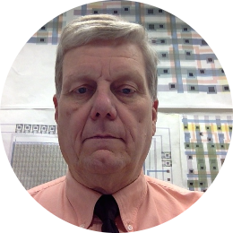

Faculty advisor:Dr. John M. Acken
John M. Acken is a faculty member in the Electrical and Computer Engineering Department, Portland State University, Portland, OR. He received his BS and MS in electrical engineering from Oklahoma State University and his PhD in electrical engineering from Stanford University. Dr. Acken’s primary research areas include: Hardware for Information Security, Digital System Testing, and VLSI design. Dr. Acken’s research projects include technology and devices for information security and identity authentication. Dr. Acken taught at Santa Clara University, Oklahoma State University and PSU. Dr. Acken has been on PhD Committees at UC Santa Cruz, Carnegie Mellon University, Syracuse University, Oklahoma State University, and of course PSU. He is a co-inventor on a patent titled: “Conditional Access and Content Security Method”, US Patent Number 6,069,647, granted 30 May 2000. He has worked as an electrical engineer and manager at several companies, including the US Army, Sandia National Labs in Albuquerque, New Mexico and Intel in Santa Clara, CA, Valid logic Systems in Santa Clara, CA, and Crosscheck Technology in San Jose, CA.. John’s time in the US Army was in the Army Security Agency, which was the Army Branch of NSA during the Vietnam War. Dr. Acken is a member of IEEE, Eta Kappa Nu, and Tau Beta Pi.
Industry Sponsor: Dr. David Burnett
Dr. Burnett joined Portland State in 2020 as part of the Environmental Sensing and Monitoring focus leveraging his background in integrated circuit design and environmental sensing. During his Ph.D. at Berkeley he was an NDSEG fellow and designed crystal-free fully-integrated wireless sensor nodes, particularly focusing on challenges presented when designing crystal-free radios without inductors. His experience before PSU includes technical staff at Sandia National Labs researching sensors for intertidal physical security, teaching electrical engineering at Da Nang University of Technology in Vietnam, and fielding underwater vehicles at McMurdo Station, Antarctica. He is a Senior Member of the IEEE.
Engineer: Mercedes Newton
ADD STUFF LATER
Engineer: Brandon Hippe
ADD STUFF LATER
Engineer: Adam Dezay
ADD STUFF LATER
Engineer: Manuel Garcia
ADD STUFF LATER